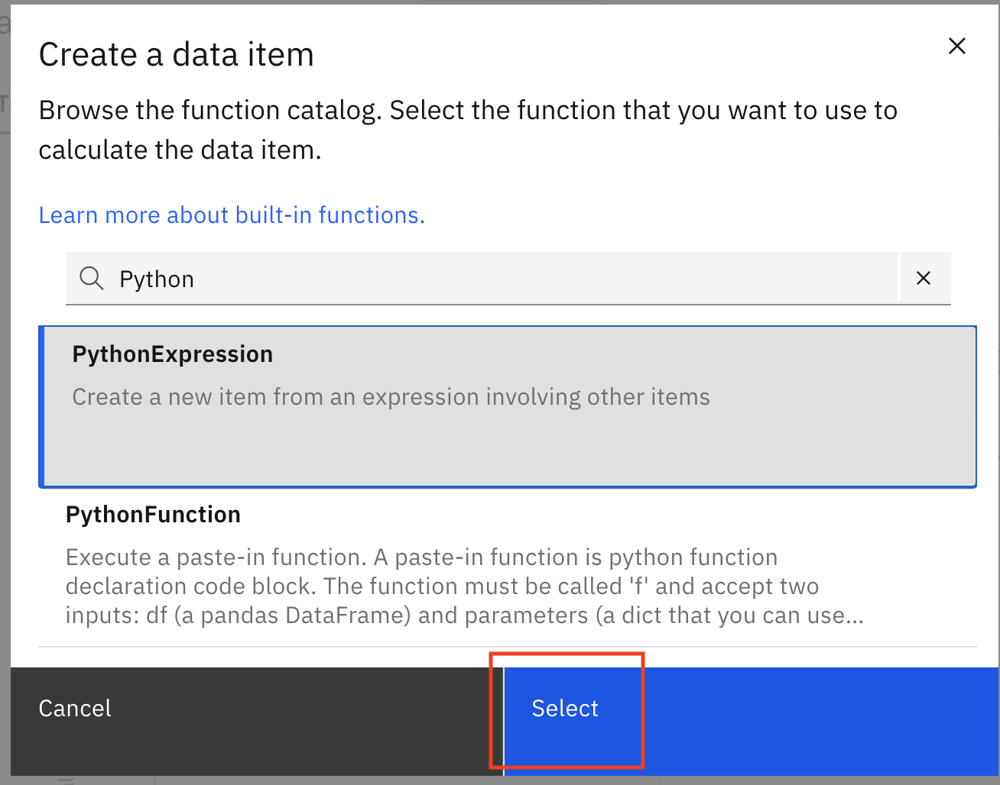
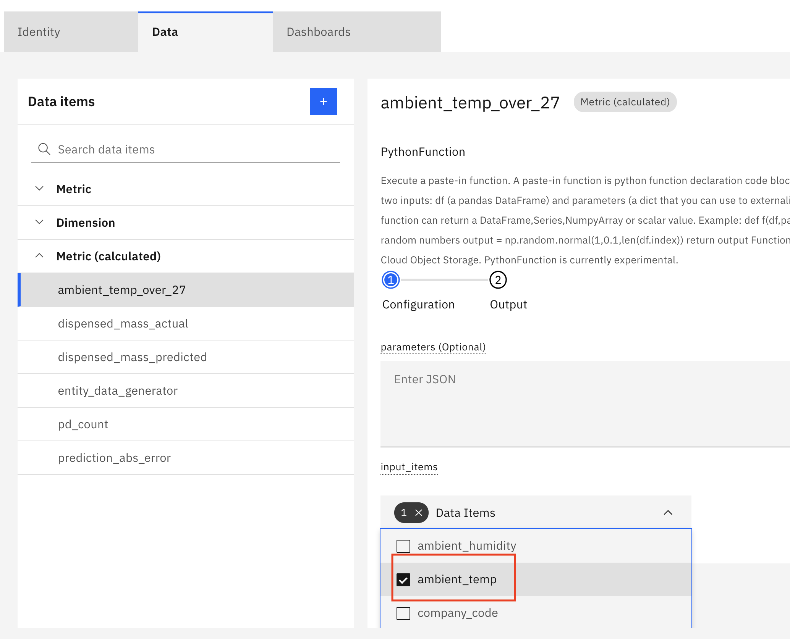

Objectives
In this Exercise using Monitor you will learn how to :
- Create a PythonExpression
Operations wants to be alerted when the temperature deviates more than 10 degress celcius. Create a PythonExpression
to calculate the temperature_deviation by subtracting ambient_temp from the max_temp_YI constant you creted in
the last exercise. You can use this calculated metric as an input an Alert Expression in inform the Monitor Remote
operational support can be alerted when a packaging asset is operating too fare outside the required operating ranges.
The PythonExpression will add a new calculated metric temperature_deviation that you wil add to your asset dashboard.
Before you begin:
-
This exercise requires that you have completed the pre-requisites required for all Exercises.
-
This exercise requires that you have completed the previous exercise.
Create a Python Expression in Monitor
-
In Monitor, select
Setup Assetstab, search forSample_Packaging_Hopper_Type_yourinitials. Click on yourDevice Typeand click onSetup Asset Typebutton.

-
Click
Datatab,+button to add a new calculated metric from the catalog. EnterPuthonin the search field of the Monitor catalog.

-
Click
PythonExpressionoption and theSelectbutton to add the function to yourAsset Type.
 -
Set the calculation data item
expressionto the value below. This will calculate the difference between the ambient temperature and the maximum temperature constant you added in the previous exercise.df['ambient_temp']-c['max_temp_cf']

- Set the output name to
temperature_deviation

Next Step
Nice work getting to here. In the next exercise, you will add your calculated metrics ambient_temp_over_max_status,
temperature_deviation and ambient_temp_over_max_status to your asset dashboard.